Conversion Leaks Review
Every brand has Conversion Leaks.
It's an always-on process of plugging them repeatedly - a Kaizen approach.
Some are small and invisible until you go looking for them. Others are sitting in plain sight, quietly draining revenue every single day.
The objective is to find the specific, high-leverage changes that will move the needle for your brand, changes that aren't just theoretical, but tied directly to how your customers shop, decide, and buy.
What follows is a series of recommendations based on how your site is currently performing, how your PDP and cart flows are structured, and where your unique advantages (materials, brand opinions) are underutilized.
They're written with just a few priority goals in mind: to improve conversion rate, average order value, and contribution margin per session.
Each recommendation is standalone. But together, they form a playbook that can strengthen your positioning, raise your conversion rate, and expand your average order value.
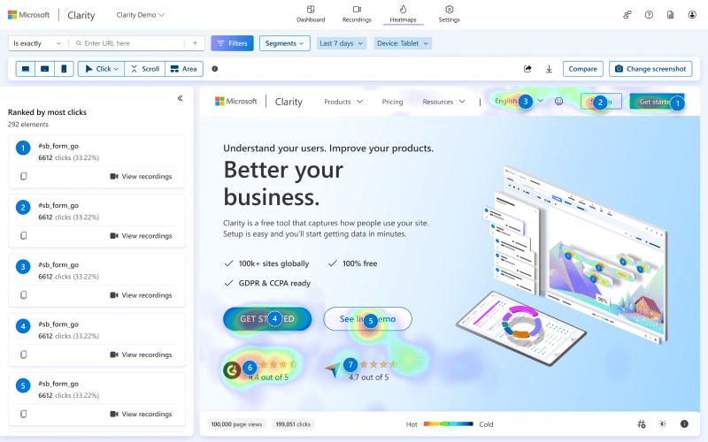
This is the foundation for everything else.
Microsoft Clarity is free heatmap and session recording software that lets you watch actual customer behavior on your site. Not what you think they're doing. What they're actually doing.
Where they click, where they scroll, where they get stuck, where they abandon.
By default we operate without this data. You can see traffic and conversion rate in Shopify Analytics, but you can't see why people aren't converting. You can't see if they're missing your add to cart button. You can't see if they're scrolling past your "rush service" messaging without noticing it. You can't see if they're confused by your customization options.
Clarity shows you all of that. And it's not just diagnostic. It's generative.
Once you can see the friction points, you can make data-informed decisions about what to fix first, instead of guessing.
This doesn't directly lift conversion rate on its own. But it informs every other decision you make. It's the foundation that makes all other optimization 3-5x more effective because you're no longer guessing what to optimize.
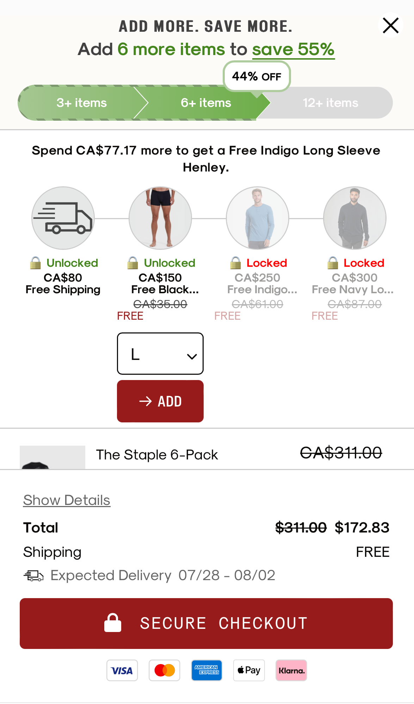
Having a slide cart functionality instead of a separate cart page keeps customers on the product page, reducing friction and streamlining the shopping process.
This convenience encourages additional purchases, minimizes disruptions, and improves the overall user experience, ultimately leading to higher conversion rates.
And allows for the opportunity for more immediate in-cart upsell actions.
The cart is one of the highest-leverage pieces of real estate on your entire site.
It's the exact moment when customers are reviewing their order, mentally calculating total cost, and asking themselves "is this everything I need?"
That question creates a decision window. And in that window, strategically positioned product recommendations can significantly increase average order value without requiring additional traffic or ad spend.
In-cart upsells work because the buying decision has already been made. The customer isn't deliberating on whether to purchase. They've crossed that threshold. Adding one more item to an existing order is psychologically easier than making a separate purchase later. It feels like completion, not additional spending.
The economics here compound in your favor. Because you're not paying customer acquisition cost on that incremental item, the margin on cart upsells is significantly higher than on the initial product.
For Kinshop Goods specifically, the key is relevance and ease. Customers should see recommendations that feel like natural extensions of what they're already buying.
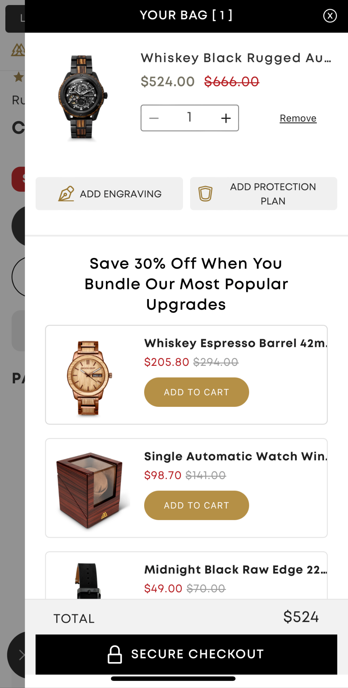
10-20% of customers who interact with cart upsells will add at least one additional item. On a $100 average cart, that translates to $10-$20 incremental revenue per order with zero additional acquisition cost.
At 1000 orders per month, that's $10,000-$20,000/month in margin expansion. Over a year, that's $100,000-$200,000 in revenue that wouldn't exist otherwise.
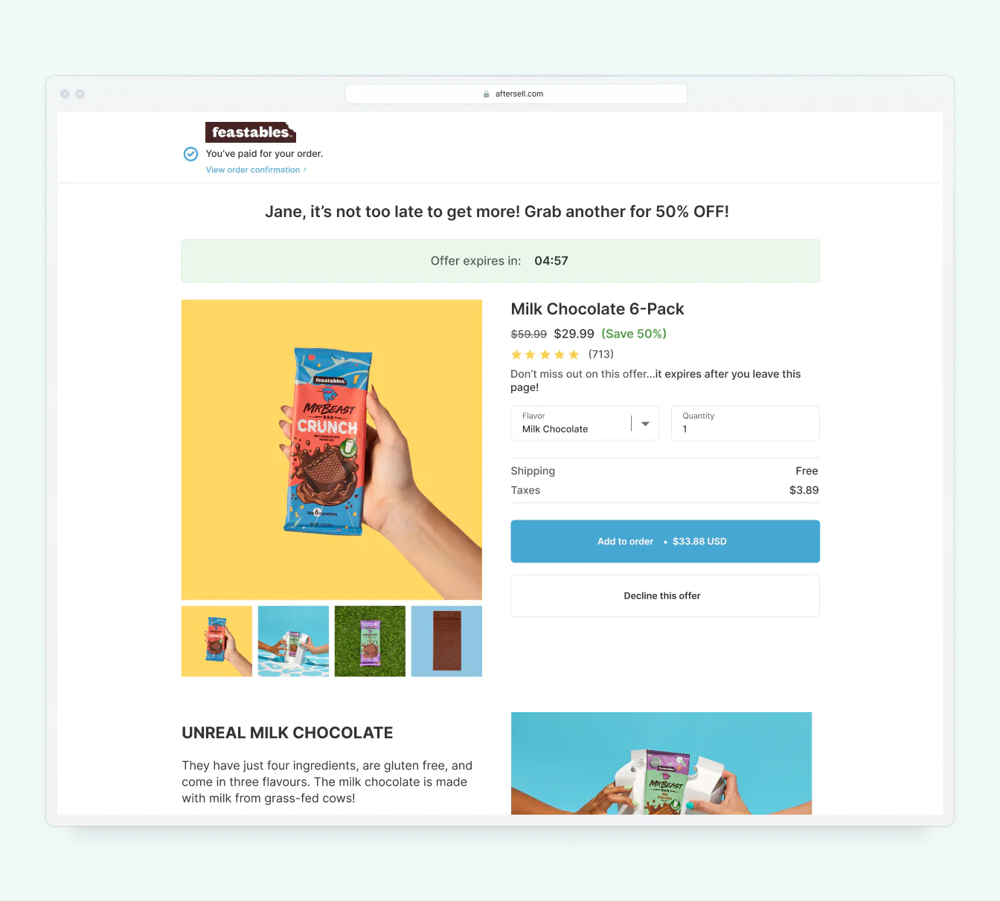
Most brands focus all their revenue growth on the front end - trying to get more traffic, better ads, higher conversion rate on the initial purchase.
But there's a lever that adds revenue without increasing your customer acquisition cost at all: post-purchase upsells.
These are offers shown immediately after a customer completes their checkout, before they reach the thank you page. The order is already placed. The credit card information is already entered. The buying momentum is still high.
At that point, adding an extra product to the order is frictionless - often just a single click - and doesn't require re-entering payment information.
The economics here are exceptional. Because you're not paying to acquire that second (or third) product, the margin on post-purchase upsells is significantly higher than on the initial sale.
Our usual structure:
A good benchmark is 10-40% take rate on upsell #1.
Use our AI post-purchase forecasting tool to model your specific numbers →
Right now, when customers scroll down your product pages to read details, see reviews, or understand customization options, your add to cart button scrolls out of view.
That means if they decide they want to buy while reading your product description or looking at your reviews, they have to scroll back up to find the button.
That's friction. And friction kills conversion.
Every extra action required between "I want this" and "I'm buying this" is a chance for hesitation, distraction, or abandonment.
The fix: make the add to cart button sticky, so it stays visible at the top or bottom of the screen as customers scroll.
This is especially critical on mobile, where scrolling is the primary navigation method. The sticky ATC button removes that barrier. The moment they're ready, the button is right there. No hunting. No scrolling. No second-guessing.
5-15% increase in add-to-cart rate, especially on mobile where scrolling is more common.
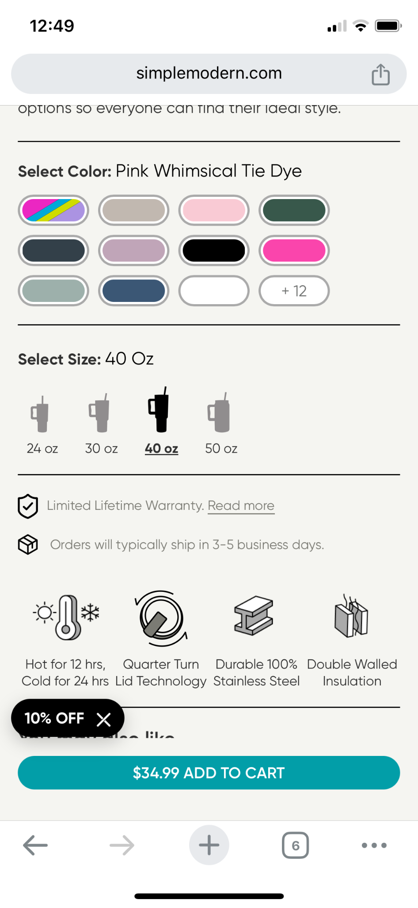
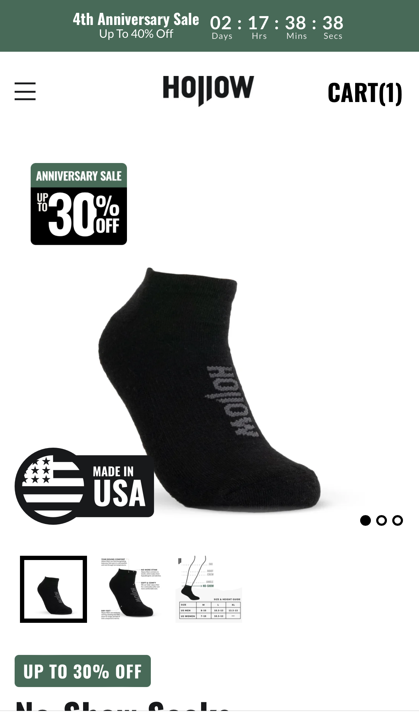
Kinship Goods has several strong differentiators that can be more visually prominent:
These are meaningful advantages. But right now, customers have to read text to discover them. And many customers don't read - they scan. They look at images first, and only read if something catches their attention.
Benefit Badges solve this problem. Badges are visual cues that draw attention to your unique selling propositions before the customer even starts reading.
They work because they're:
Scannable: Customers process them in a fraction of a second
Trustworthy: They look like certifications or quality markers
Differentiation: They immediately signal "this isn't just another generic product"
Right now, your product pages don't contain a section that reminds consumers of why they should buy from you, either explicitly or implicitly.
We call this a USP section (unique selling proposition).
Telling customers why they should buy from you specifically, rather than from Amazon or Etsy or any of the dozens of other shops selling leather and handmade goods.
You can have a section that speaks beyond the widgets to what you believe in as a brand. This helps with de-commoditizing products while increasing conversion rate and LTV.
Using the Thesis Architect in PromptedOS can help with this.
Most product pages treat FAQs as an afterthought, if they exist at all.
A higher-converting approach is proactive: anticipate the questions customers are already asking in their head and answer them directly on the product page in a way that builds confidence and reduces hesitation.
Consider the FAQ section a "second sales page".
A well-constructed FAQ section isn't just a support tool. It's a conversion asset. Done right, it:
What Your FAQ Should Actually Cover:
Every FAQ entry is an opportunity to answer the question clearly AND reinforce why this business is a safe, smart choice.
In short: every unanswered question is friction. Every well-answered question is a reason to buy.
10-15% reduction in cart abandonment by addressing objections before they become reasons not to buy. Fewer support inquiries. Higher customer confidence leading to higher conversion rate.
Most carts show a subtotal and a checkout button — and that's it.
What's missing is a visual incentive that encourages customers to add just one more item before checking out.
One of the most effective ways to do this is by pairing a shipping incentive with a progress bar in the cart that shows customers how close they are to unlocking it.
When customers can see a progress bar showing "$20 more for FREE SHIPPING", it transforms an abstract goal into a concrete, achievable target.
This works because of several psychological principles:
Goal Gradient Effect: People accelerate their efforts as they get closer to a goal. Seeing "only $23 away" feels achievable.
Loss Aversion: Customers don't want to "miss out" on free shipping they're close to unlocking.
Gamification: Progress bars tap into the same dopamine response as video game progress trackers.
5-10% increase in average order value by encouraging customers to add items to reach the threshold.
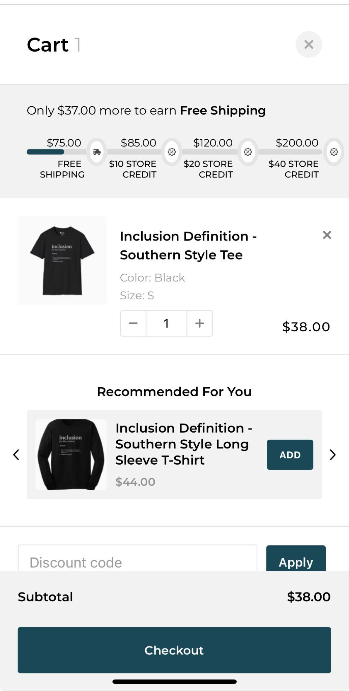
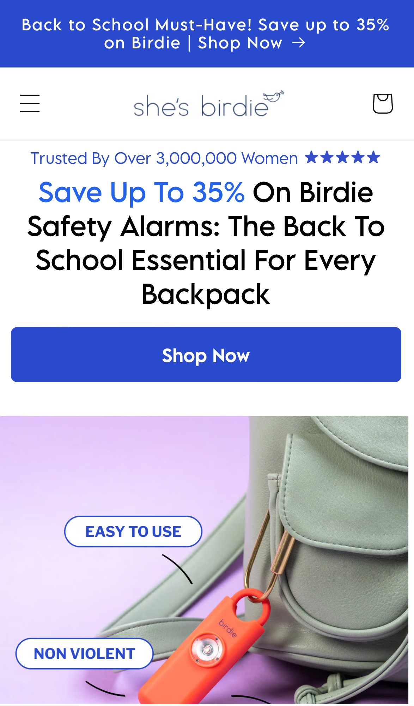
The homepage hero is the first thing most visitors see. It sets the tone for their entire session.
And right now, most brand heroes focus on aesthetics or vague brand messaging instead of doing the one thing that actually drives action: making a compelling offer.
The structure is deliberate:
Social proof line: Trust signal with star ratings ("Trusted By Over 3,000,000 Women")
Main headline: Specific offer + clear product benefit ("Save Up To 35% On Birdie Safety Alarms")
CTA: Direct action ("Shop Now")
This isn't just design. It's conversion architecture.
Every element is engineered to answer the visitor's immediate question: "What's in it for me right now?"
Reposition your hero content to be promotion-first. Test seasonal offers, new customer incentives, or urgency messaging. Use the Offer Engine in PromptedOS to help with ideation.
A dedicated, strong, well-placed guarantee isn't just a customer service policy. It's a conversion lever.
It takes risk off the table, removes hesitation, and gives people the confidence to buy now instead of "thinking about it."
The example from BiOptimizers is a good reference point. It's bold, unmissable, and specific.
It doesn't just say "we have a guarantee" - it spells out exactly what that means, how long it lasts, and what the customer needs to do to claim it.
More importantly, it reframes the guarantee as part of the sales pitch. By highlighting that customers have up to 365 days to decide, it makes the purchase feel safe and low-pressure.
This is especially important if your historical refund and return rates are already low. Extending a more generous guarantee often has no measurable impact on refunds, but can meaningfully lift conversion rates.
5-15% increase in conversion rate by removing purchase anxiety as a barrier. Particularly effective for first-time customers.
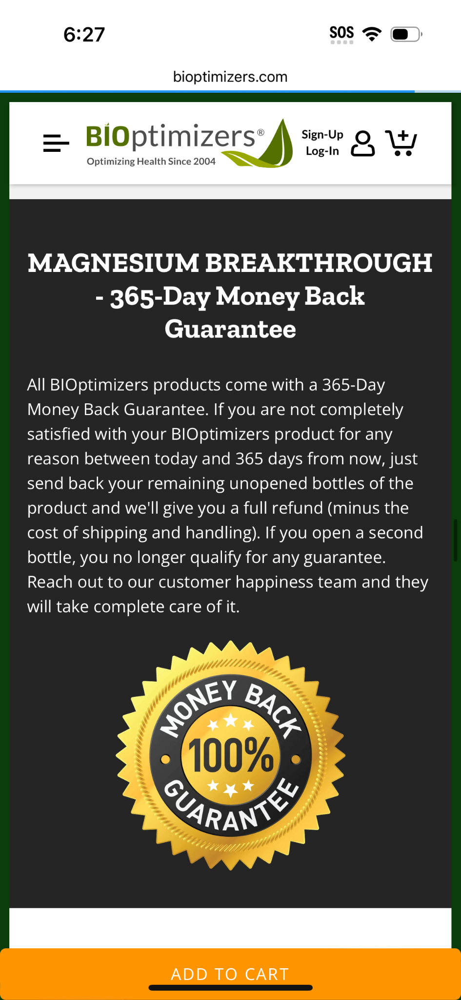
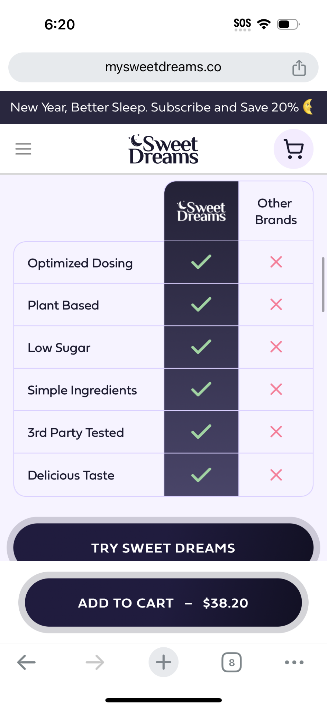
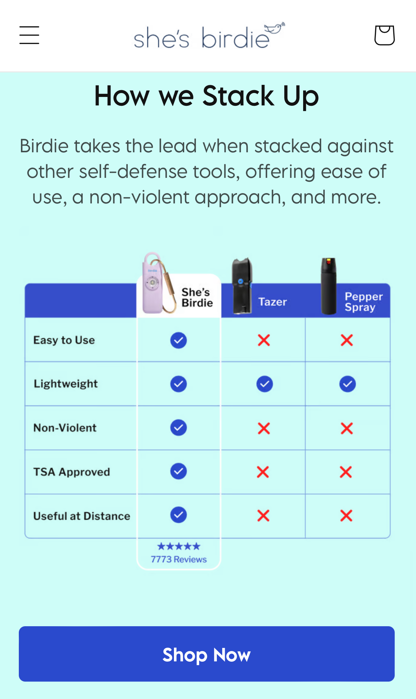
On most product pages, customers are expected to read through descriptions and infer why one option is better than another. In reality, most visitors don't read, they scan.
Redundancy in information via different formats (text, chart) improves conversion rate.
If your key advantages aren't immediately obvious, shoppers default to easy heuristics: lowest price, fastest delivery, or the most familiar marketplace.
A comparison chart solves this by making differentiation visual and immediate. It answers the unspoken question every shopper has: "Why should I buy this here instead of somewhere else?"
5-10% increase in conversion rate by making differentiation obvious to scanners. Reduces price sensitivity (when advantages are clear, price becomes less important).
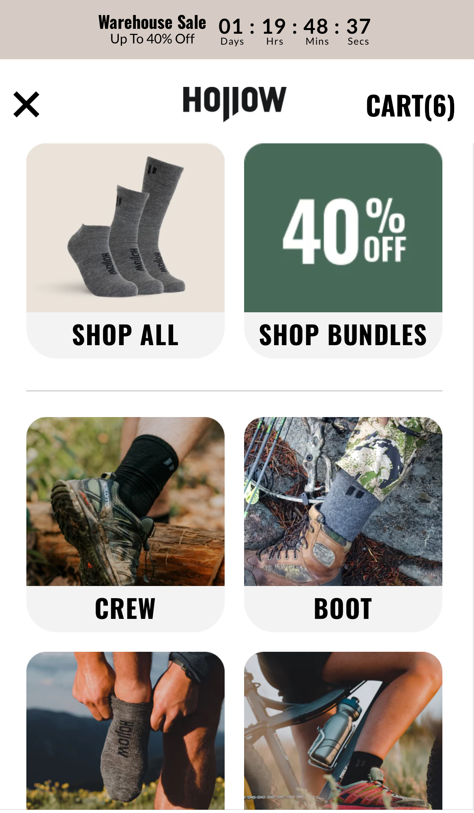
Right now, your navigation menu is text-only. It works as a directory, but it doesn't help customers discover products or understand what's inside each category.
That's a missed opportunity because the brain processes images 60,000 times faster than text.
When customers open your navigation, they're trying to quickly understand what you sell and where to find what they're looking for. Text requires reading and interpretation. Images provide instant recognition.
Visual navigation would help customers immediately understand your product range: cribbage boards, wallets, bags, keychains etc.
This isn't just aesthetic. It's functional. Visual cues reduce cognitive load and help customers find what they want faster.
The offline parallel: In physical retail, endcaps and signage always feature visuals because they stop people and draw them in. Your mobile nav is the digital equivalent. Right now it's functioning as a label. With images, it becomes a lure.
5-10% increase in category page visits. Better product discovery. Lower bounce rate.
Right now, your cart experience is transactional. Customers see their items, see the total, and either proceed to checkout or leave. There's no momentum. No progress. No reason to add more items beyond their initial intent.
Tiered cart incentives change that dynamic entirely.
Instead of a single free shipping threshold, you create multiple tiers that unlock progressively better rewards as customers add more to their cart.
This taps into powerful psychological principles: goal gradient effect, loss aversion, and gamification.
Example:
Why this works:
Momentum builds: Once a customer unlocks Tier 1, they're psychologically invested.
FOMO activates: Seeing "You're $15 away from free shipping!" creates urgency.
Gamification feels fun: Progress bars are engaging. Unlocking rewards feels like winning.
Higher AOV without deep discounts: You're incentivizing larger carts through value-adds rather than percentage discounts that erode margin.
This is one of the highest-leverage tactics in modern ecommerce. Brands that implement tiered incentives well see outsized returns because it fundamentally changes purchase psychology from transactional to goal-driven.
One last note on how to think about these recommendations:
The goal isn't just to increase revenue. It's to increase contribution margin - the profit left after you subtract variable costs and ad spend.
With your business model (custom products, in-house production, variable fulfillment costs), not all revenue is created equal.
As you implement these recommendations, track:
Not just AOV, but gross margin per order (net revenue minus COGS, fulfillment, shipping, payment processing)
Not just conversion rate, but contribution margin per session (gross margin minus ad spend, divided by sessions)
Not just revenue growth, but first-order profitability (can you acquire customers profitably on first order, or do you need repeat purchases to break even?)
This matters because some tactics drive AOV but reduce margin (like heavy discounting). Others drive AOV and improve margin (like post-purchase upsells, which have no additional CAC).
The recommendations in this document are designed to improve both volume and margin - not just drive more sales, but drive more profitable sales.